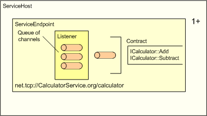

title: Service Host description: The service host is the runtime environment for hosting a service within a process. ms.assetid: 42e4d24d-5611-4561-b874-6dc3f3f88c73 keywords:
The service host is the runtime environment for hosting a service within a process.
A service can configure one or more endpoints inside a service host.

Before creating a service host, a service needs to define its endpoints. An endpoint in service host is specified in the WS_SERVICE_ENDPOINT structure and it is defined by the following information:
WS_SERVICE_ENDPOINT serviceEndpoint = {0};
const WS_SERVICE_ENDPOINT* serviceEndpoints[1];
serviceEndpoints[0] = &serviceEndpoint;
WS_STRING url = WS_STRING_VALUE(L"net.tcp://+/Example");
// Method based service contract for the service
static WS_SERVICE_CONTRACT calculatorContract =
{
&calculatorContractDescription, // comes from a generated header.
NULL,
&calculatorFunctions, // specified by the application
};
serviceEndpoint.address.url = &url;
serviceEndpoint.binding.channelBinding = WS_TCP_CHANNEL_BINDING;
serviceEndpoint.contract = &calculatorContract;
serviceEndpoint.channelType = WS_CHANNEL_TYPE_DUPLEX_SESSION;
serviceEndpoint.authorizationCallback = AuthorizationCallback; // Authorization callback.
Only one-way contracts are supported for SOAP over UDP, represented by WS_UDP_CHANNEL_BINDING in the WS_CHANNEL_BINDING enumeration.
After an endpoint is defined, it can be passed to the WsCreateServiceHost function, which takes an array of pointers to WS_SERVICE_ENDPOINT structures.
HRESULT hr = WsCreateServiceHost (serviceEndpoints, 1, NULL, 0, &host, error);
An application can optionally provide an array of service properties to WsCreateServiceHost to configure custom settings on the service host.
An application opens the service host to start accepting client requests.
WsOpenServiceHost(serviceHost, NULL, NULL);
After opening the service host, the application can close it if there are no more operations that require it. Note that this does not release its resources, and that it can be reopened with a subsequent call to WsResetServiceHost.
WsCloseServiceHost(serviceHost, NULL, NULL);
After closing the service host, an application may reset the service host for reuse.
WsResetServiceHost(serviceHost, NULL);
When the application is done with the service host it can free the resources associated with the service host by calling the WsFreeServiceHost function. Note that WsCloseServiceHost must be called before calling this function.
WsFreeServiceHost(serviceHost, NULL);
For information on attaching a custom state to the service host, see User Host State
For information on authorization in a service host for a given endpoint, see Service Authorization.
For iinformation on implementing service operations and service contracts for a service, see the service operations and service contracttopics.
An application can use the followin properties to control the amount of resources the service host allocates on behalf of the application:
Secure defaults are chosen for each of these properties, an application must be careful if it wishes to modify these properties. Beyond the above-mentioned properties, channel, listener and message specific properties can also be modified by the application. Refer to the security considerations of these components before modifying any of these settings.
In addition, the following application design considerations should be carefully evaluated when using WWSAPI service host API:
The following API elements are used with the service host.
| Callback | Description |
|---|---|
| WS_SERVICE_ACCEPT_CHANNEL_CALLBACK | Invoked when a channel is accepted on an endpoint listener by the service host. |
| WS_SERVICE_CLOSE_CHANNEL_CALLBACK | Invoked when a channel is closed or aborted on an endpoint. |
Â
| Enumeration | Description |
|---|---|
| WS_SERVICE_ENDPOINT_PROPERTY_ID | Optional parameters for configuring a WS_SERVICE_ENDPOINT. |
| WS_SERVICE_HOST_STATE | The states that a service host can be in. |
| WS_SERVICE_PROPERTY_ID | Optional parameters for configuring the service host. |
Â
| Function | Description |
|---|---|
| WsAbortServiceHost | Interrupts and discontinues current operations on the service host. |
| WsCloseServiceHost | Closes all listeners so that no new channels are accepted from the client. |
| WsCreateServiceHost | Creates a service host. |
| WsFreeServiceHost | Releases the memory associated with a service host object. |
| WsGetServiceHostProperty | Retrieves a specified Service Host property. |
| WsOpenServiceHost | Opens a service host for communication and starts the listeners on all the endpoints. |
| WsResetServiceHost | Resets the service host for reuse and resets the underlying channel and listeners for reuse. |
Â
| Handle | Description |
|---|---|
| WS_SERVICE_HOST | An opaque type used to reference a service host. |
Â
| Structure | Description |
|---|---|
| WS_SERVICE_ENDPOINT | Represents an individual endpoint on a service host. |
| WS_SERVICE_ENDPOINT_PROPERTY | Specifies a service-specific setting. |
| WS_SERVICE_PROPERTY | Specifies a service-specific setting. |
| WS_SERVICE_PROPERTY_ACCEPT_CALLBACK | Specifies the callback which is called when a channel is successfully accepted. |
| WS_SERVICE_PROPERTY_CLOSE_CALLBACK | Specifies the callback which is called when a channel is about to be closed. |
Â
Â
Â